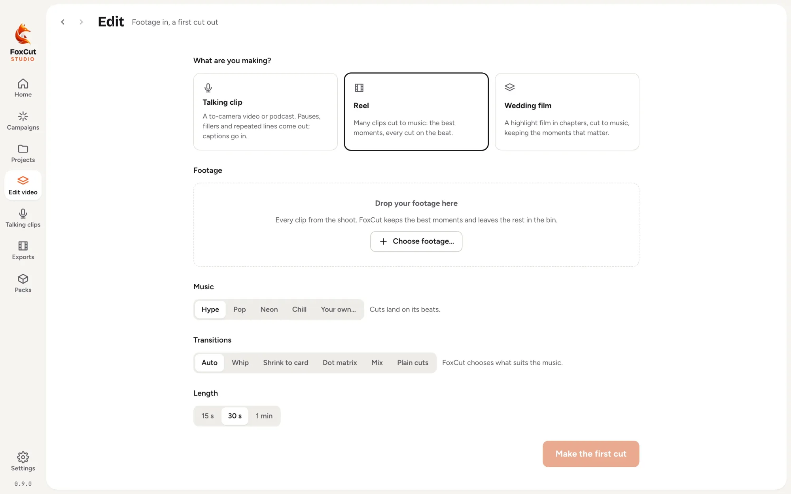

Type what you want. FoxCut cuts it.
A video studio for Mac and Windows, with an iPhone app on the way. Type a sentence or drop in your footage, and FoxCut cuts talking clips, short videos and wedding films, then exports them sized for each platform.
Early access · macOS 13 or later on Apple silicon · Windows · iPhone app in development
Try the one bar. Tap a suggestion or type your own.
Plan Demo
- Your plan shows up here, step by step.
A demo of the idea, running in this page. Nothing is sent anywhere.




01 Talking clips
A to-camera video in, a captioned clip out.
Film upright or sideways, in English or Telugu. FoxCut listens, cuts the pauses and the fillers, and writes the captions.
- One clip, or several from one long video
- Language detected for you, or pick English or Telugu
- The speech model downloads once, the first time you use it
Captions with character.
One sentence, five of FoxCut's caption styles. Tap the frame or pick a style.
02 Edit video
Footage in, a first cut out.
Say what you are making: a talking clip, a short cut to music, or a wedding film. Drop the footage and FoxCut keeps the best moments.
- Cuts land on the beat of the music you choose
- Transitions picked to suit the track, or set your own
- Pick a length and get a first cut to refine
03 Campaigns, packs and approvals
One brief, every format.
Start a campaign with a sentence, such as a festive offer or a product launch. FoxCut plans the pieces it needs and fills in the shared details once.
A poster, a status and a short video from the same brief, so they match.
Ready-made looks you can add to a project, so every video keeps one style.
Each piece waits for your yes. Nothing is exported as final before that.
04 Who it is for
For people who film, not people who edit.
Offers, launches and updates, without learning an editor.
Patient-education clips, captioned and tidy.
Long recordings turned into several short clips.
A highlight film from a full day of footage.
FoxCut is built in Kadapa, Andhra Pradesh, by the same team that runs the Busy Fox agency. We built it for our own client work first. Questions go to admin@busyfox.in.
See how FoxCut handles data in the privacy policy and the terms.